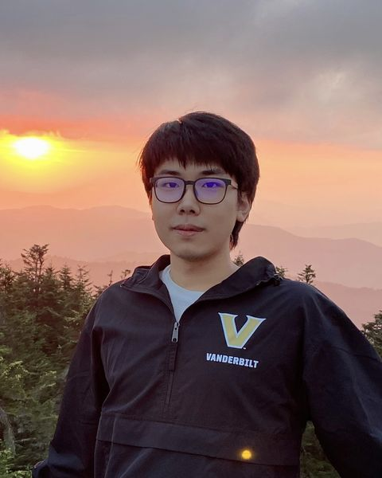
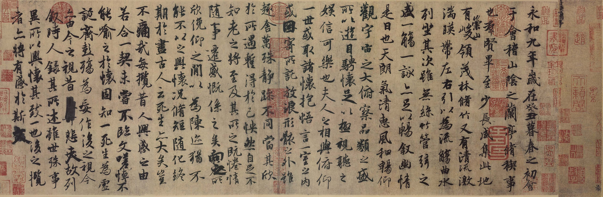

月光
Clair de lune
Claude Debussy, Suite bergamasque, published 1905
I trained in computer science, mathematics and data science, and found my problems in chemistry. The questions I work on are about molecular recognition: where a molecule binds, how tightly, and whether a model can learn to propose a better one. Increasingly I also build the agentic systems that carry such models through a whole scientific workflow.
BS in computer science, mathematics and data science at the University of Wisconsin–Madison.
MS in data science at Vanderbilt, with research in the Meiler Lab on generative models for structural biology, from water and metal sites to antibody epitopes. The Data Science Institute wrote about the work.
Computational chemistry at Takeda in Cambridge: machine learning for binding, activity and design, co-folding pipelines, and agentic workflows, toward a broader practice of AI for science.

A classical scholar was expected to practise four arts, 琴棋書畫: music, Go, calligraphy and painting. They are mine too: piano and guitar, Go, more than fourteen years of calligraphy, and ink-wash painting. Each room holds a masterpiece by someone else, shown as faithfully as a screen allows.
Clair de lune
Claude Debussy, Suite bergamasque, published 1905
Recuerdos de la Alhambra
Francisco Tárrega, 1896
Lee Sedol vs AlphaGo, game four
Seoul, 13 March 2016. Lee Sedol, White, wins by resignation
AlphaGo had won the first three games. On move 78 Lee Sedol played a wedge the program had judged most unlikely; this became the only game a human won in the match.
The ear-reddening game
Osaka, 1846. Honinbo Shusaku, Black, wins by two points
Seventeen-year-old Shusaku against Inoue Gennan Inseki. After move 127 a doctor watching noticed Gennan’s ears flush red, and took it as the moment the game turned.
Preface to the Orchid Pavilion Poems
Wang Xizhi, 353; Tang dynasty tracing copy

Dwelling in the Fuchun Mountains
Huang Gongwang, 1347–1350; the Master Wuyong scroll